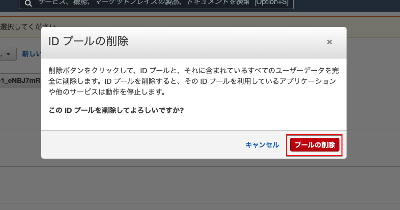
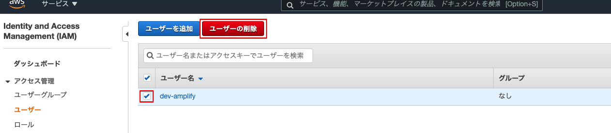
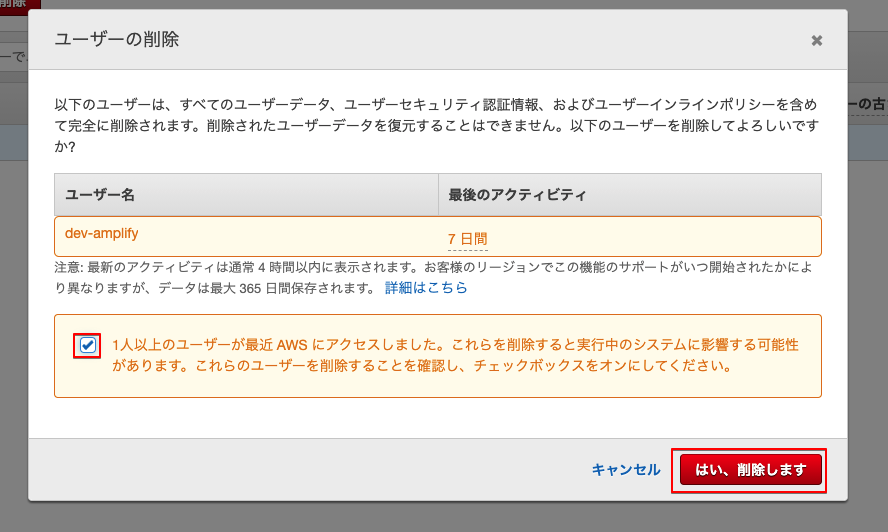

10. ハンズオン環境削除
使用したAmplifyアプリの削除とIAMユーザーの削除，そしてコンテナとイメージの削除を行います．
10.1. Amplify上のアプリを削除
AWSコンソール上からすべてのアプリを表示し，削除するアプリを選択します。まずはreactamplify（下図左側）を削除します。こちらはamplify add authで追加したアプリになります。

画面右上のアクションからアプリの削除を押します。

テキストボックスにdeleteを入力し，Deleteボタンを押します。実際に削除されるまでは少々時間がかかりますが，これで認証用に作成したauthのアプリは削除されます。

次はReactで作成したreact-amplifyアプリ（下図右側）の削除を行います。
こちらも画面右上のアクションからアプリの削除を押します。

同じくテキストボックスにdeleteを入力し，Deleteボタンを押します。こちらはすぐ削除されます。

10.2. CognitoのIDプール削除
検索ボックスにcognitoを入力し，Cognitoのサービスへ飛びます。
IDプールの管理ボタンを押します。
Amplifyで作成したアプリと対応したIDプールがあるので選択します。
画面右上のIDプールの編集リンクを押します。
飛んだ先の画面下部にIDプールの削除ボタンがあるので押します。
プールの削除を押し，IDプールの削除は完了です。 
10.3. Cognitoのユーザープール削除
再び検索ボックスにcognitoを入力し，Cognitoのサービスへ飛びます。
ユーザープールの管理ボタンを押します。
Amplifyで作成したアプリと対応したユーザープールがあるので選択します。
飛んだ先の画面右上にプールの削除リンクがあるので押します。
テキストボックスにdeleteと入力し，プールの削除ボタンを押して完了です。
10.4. IAMユーザーの削除
amplify用に作成したユーザーを削除していきます。検索ボックスにIAMと入力し，ユーザーを選択してください。

削除するユーザーのチェックボックスをONにし，ユーザーの削除ボタンを押します。

チェックボックスをONにし，はい，削除しますボタンを押します。 
AWSコンソールの作業はこれで完了です。次は使用したコンテナとイメージを削除します。
10.5. Dockerコンテナの削除
VS Codeのターミナル，もしくはご自身が使用しているターミナルで以下コマンドを実行し，稼働中のコンテナを停止します。停止に完了すると停止したコンテナIDがターミナルに表示されます。
docker stop $(docker ps -q)
念の為，停止している全コンテナを確認します。
docker ps -a
下図のようにターミナル上に表示されるので，コンテナIDもしくはコンテナ名をコピーして下さい。

以下コマンドを実行します。
# docker rm コンテナIDもしくはコンテナ名
docker rm amplify-demo_amplify_1
コンテナを確認し，消えていればコンテナの削除は完了です。次はイメージを削除します。
docker ps -a
10.6. Dockerイメージの削除
ローカルに保存されているイメージの確認をするので以下コマンドを実行してください。
docker images
下図のようにリポジトリ部はtanabebe/meet-amplify-demoとなっているのでイメージIDをコピーします。

コピーしたイメージIDを使用してイメージの削除コマンドを実行します。
# docker rmi イメージID
docker rmi 21d270f241ed
※もし消えない場合はdocker rmi -f 21d270f241edのように，強制的に削除する-fのオプションを使用してください。
最後にイメージが消えているか確認し，完了です。
docker images
お疲れ様でした。